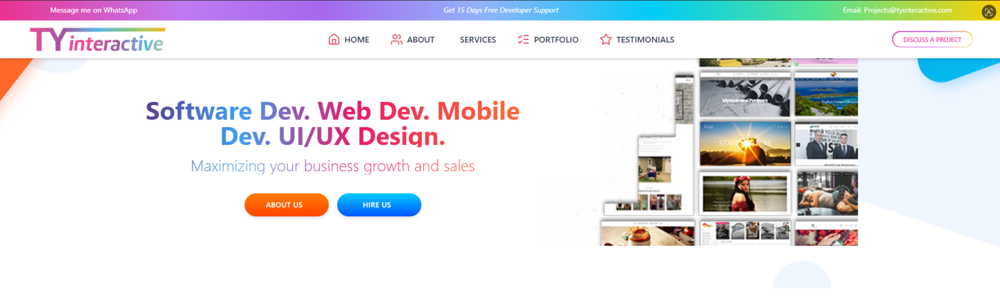
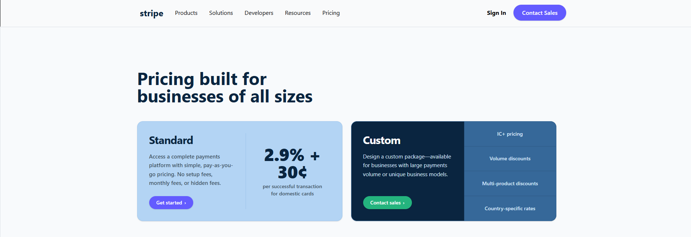
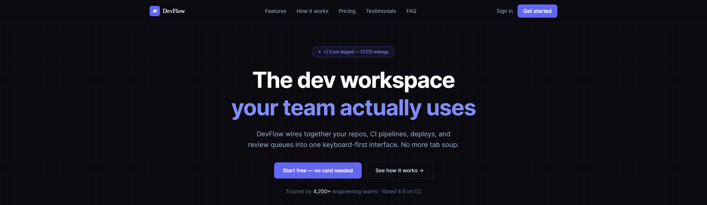
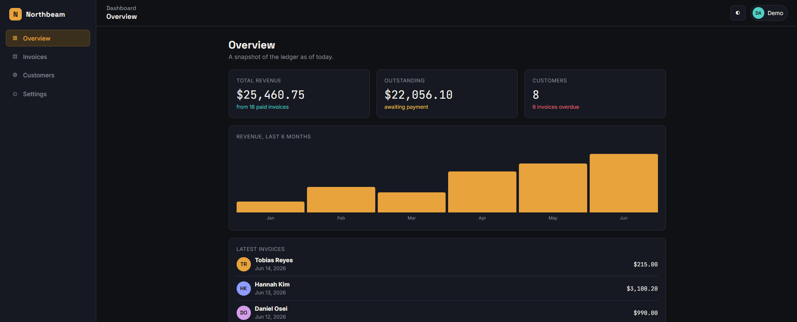

A clear look at what I have built, what I have learned, and how I transitioned from React basics to modern Next.js workflows.
Learning React by rebuilding TyInteractive and replicating premium layouts.
Moving to Next.js and completing a template conversion test for Mostafa Bhai.
Building the Northbeam Dashboard prototype to master app authentication.
Converted our old WordPress website into a clean Single Page Application (SPA).

Recreated the complex Stripe pricing layout from scratch to test UI skills.

Moved into Next.js to leverage server-side features and modern file-based routing protocols.
Converted a raw HTML template into a full Next.js application structure to prove fundamental knowledge.

Building a multi-page operational dashboard application prototype to study advanced global state and route shielding mechanisms.
Learning how to securely store user tokens, handle persistent logins, and protect secure dashboard layouts.

Finish the login security loops inside the Northbeam Dashboard prototype.
Connect the static layout fields to dynamic database endpoints for live testing.
Go through the entire codebase with Mostafa Bhai to clean and optimize my work before adding more features.